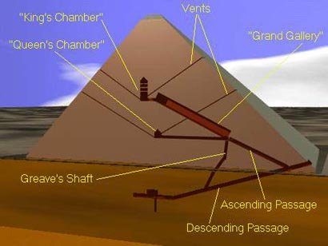

Free Energy (Pyramids)
Topics to be discussed:
1. What were the pyramids built for
4. What is the message most crop circles are trying to give us
5. Where does “free energy” come from
6. How is it possible to harness “free energy”
7. Where are we today with this technology
Most believe this story starts with Nikola Tesla, although it does not. Tesla merely duplicated experiments from much earlier in history. How much earlier? Think ancient Egypt. Is it true that people living in ancient times were much smarter than we are today? A quick look at ancient structures and we can say without a doubt, yes! Although, look at it this way… societies have always grown separate from each other. Today we have people living in heated homes with running water in some parts of the world, and yet in other parts people have yet to experience electricity. This is how it always was. So where did the ancient Egyptians obtain the knowledge of “free energy” before anyone else? That’s open to your opinion. I believe we as humans are defiantly capably of discovering it on our own, but also I wouldn't be able to fully rule out the possibility of alien intervention, now would I? After all, there’s no way of knowing for sure aliens don’t exist, correct? So both scenarios are equally plausible in my opinion. What we do know however, is how the great pyramid of Giza was able to generate electricity.

It almost makes me laugh when it used to be commonly accepted that this pyramid was used for a burial tomb for the pharaoh (see image above). Just look at the interior of the pyramid, why would the ancient Egyptians make such a strange interior if it was just meant to be a burial tomb? Just looking at the image above makes me feel that the pyramid was something more of a machine. Obviously, there is something more to this than what we first understood. One of our biggest problems is that we try to explain things we have no idea about, and force a meaning upon them with lack of better judgment. Our ego makes us afraid to admit that we don’t understand something.
So now with our egos aside, what clear educated guess can we make explaining the real purpose of the pyramids, which also has some evidence? Let’s start with: What do we know about them and what we don’t know about them? Well for one, the shape of a pyramid itself is very special. It’s not that specific shape just because that’s the easiest shape to build with and achieve great heights… which is what school had taught me when I was very young (more on this here: pyramid power). We’re not exactly sure of the extent that the ancient Egyptians used the pyramid, some theories include: remote on-demand energy for a space-craft to re-charge, providing electricity in the air allowing us to use electronics without needing a plug (free energy), levitation, special mental and physical cleansing, etc. Let’s start from the bottom up with what we do know. Literally, the bottom of the pyramid had a river flowing underground, that’s why the descending passage was built. In order to remotely control “free energy” you need a source of water underground. (Nikola Tesla understood this and mimicked it)The descending passage then nicely connects to the other passages. An interesting note to make is that there are no signs of smut from smoke inside the pyramid. So this tells us the ancient Egyptians had to have access to their own version of a flash light, instead of using torches. However, there are signs of certain distinct chemicals on the walls, almost hinting at the pyramid being a power plant. On the exterior of the pyramid used to be a layer of lime stone. This layer was used to contain the electricity, so it wouldn't disperse as it traveled up the pyramid’s interior… think a copper wire being encased in a plastic coating to keep the electricity from escaping too soon. At the top of the pyramid used to be a golden cap, which was the “antenna” of the whole structure. This is why the pyramid today isn't able to produce any free energy. Now the question is, “what are those small passages coming from the queen’s chamber and king’s chamber?” (more on this here: star of Sirius)
Now that we have a better understanding of what the pyramid really was built for, there is one other major ingredient even more important than the missing exterior lime stone coating and the golden top, and that was the Ark of the Covenant. Yes the one that Moses had in his possession as he led the Jews across the dessert for 40 years, the one and the same. (more on this here: ark of the covenant) Basically the Ark of the Covenant contained something that was radioactive and this was placed in the King’s chamber. Previously it was accepted that the empty box inside the King’s chamber contained the Pharaoh’s body and grave robbers had stole it. However, the measurement of this empty box is too small for the Pharaoh’s body to fit in, yet the dimensions of it are similar to the dimensions of the Ark of the Covenant found in the bible. This is how we’re able to theorize the use of the King’s chamber.
This is just about all the available information on the pyramid being used as the first known device to harness free energy that I know of so far. Mind you this was back almost 5,000 years ago (age is predicted from the interior air-shafts aligning with certain stars). So when is the next time someone on earth invented a device to harness free energy, you ask? Answer: 1889. Yes, it took this long before Nikola Tesla rediscovered free energy for us. His goal was to allow the world access to free energy any time and any place. In other words, you could be in the dessert in Africa and merely have to use an antenna to be able to tap into this free energy source. Imagine how the world would be today if this were the case. Electricity is one of the most important things we have become dependent on today and honestly we take for granted. Go a few days during a blackout and you’ll realize again how important electricity is for you. I should know since I live in New Jersey and we just recently were hit bad with Hurricane Sandy. A lot of people had no electricity for a week to 2 weeks. Luckily hospitals have back-up generators, but that’s not the case everywhere in the world. So imagine, no matter how bad a storm is you would still have power. You wouldn't need electric wires, which are extremely dangerous when they fall down. Most important to me of all is that people living in poverty in other countries would have a much better quality of life if this existed. Honestly, I could make a whole article about how crucial this would be for everyone. There is not one good reason at all for us not to use “free energy” today. Some may believe that it’s dangerous to have electricity in the air running around us, but that’s not the case at all. We currently have radio waves passing through our bodies all the time and the amount of electricity in the air to be considered dangerous is far more than what would be needed to remotely distribute free energy.
Please click here to continue this article and found out how Nikola Tesla and Viktor Schauberger affected the free energy game…
Wisdom-Square › Alternative Energy Sources › Free Energy (Pyramids)